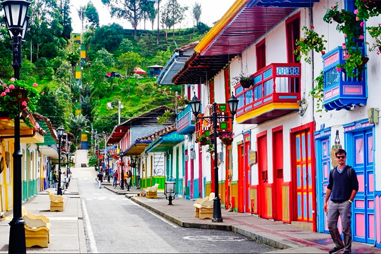
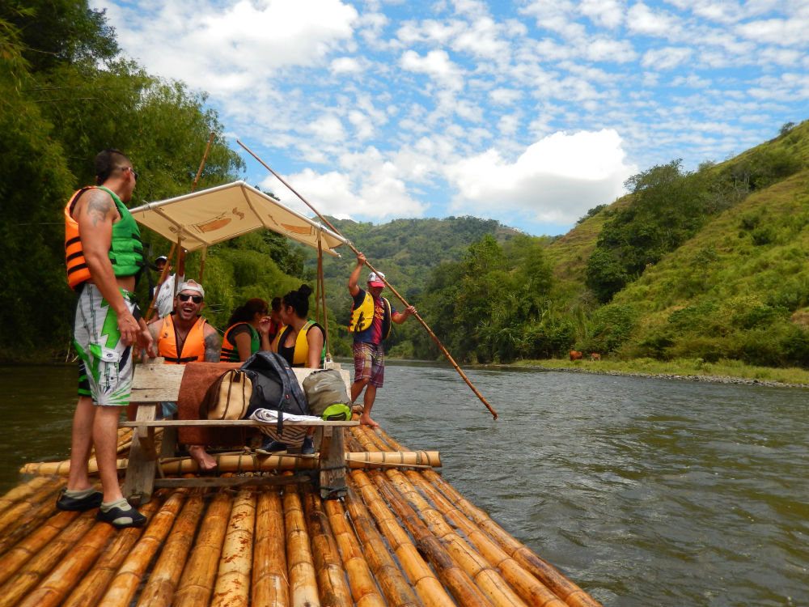
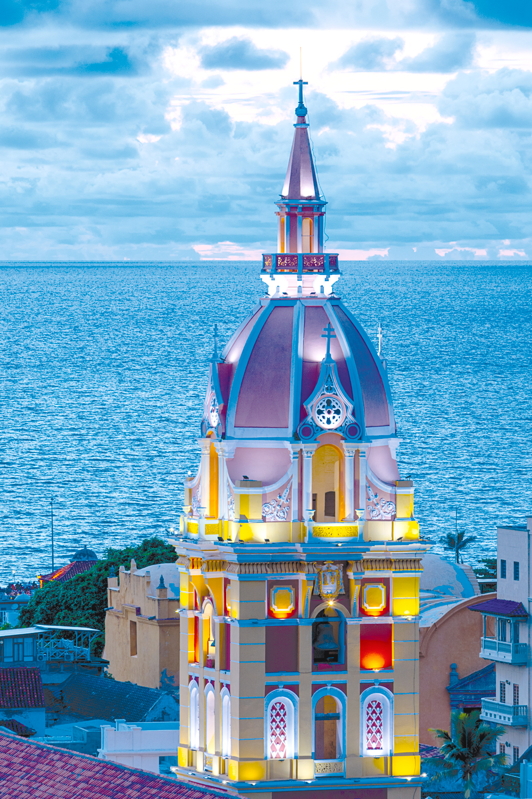
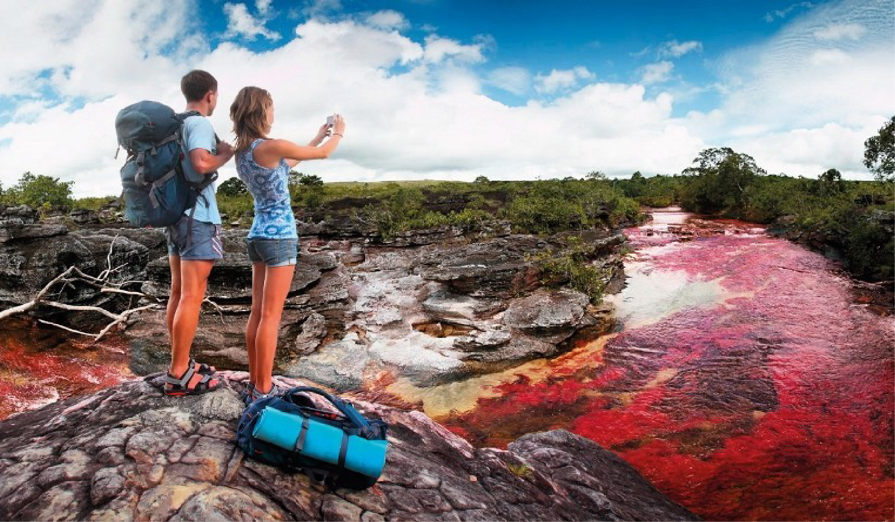
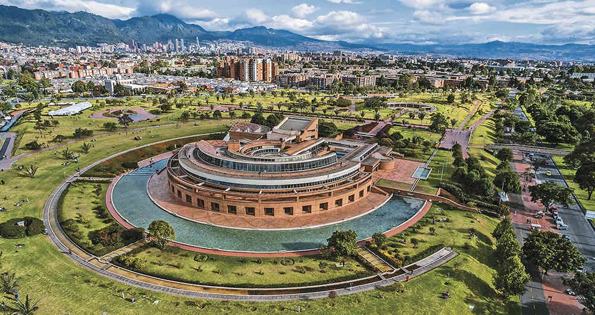
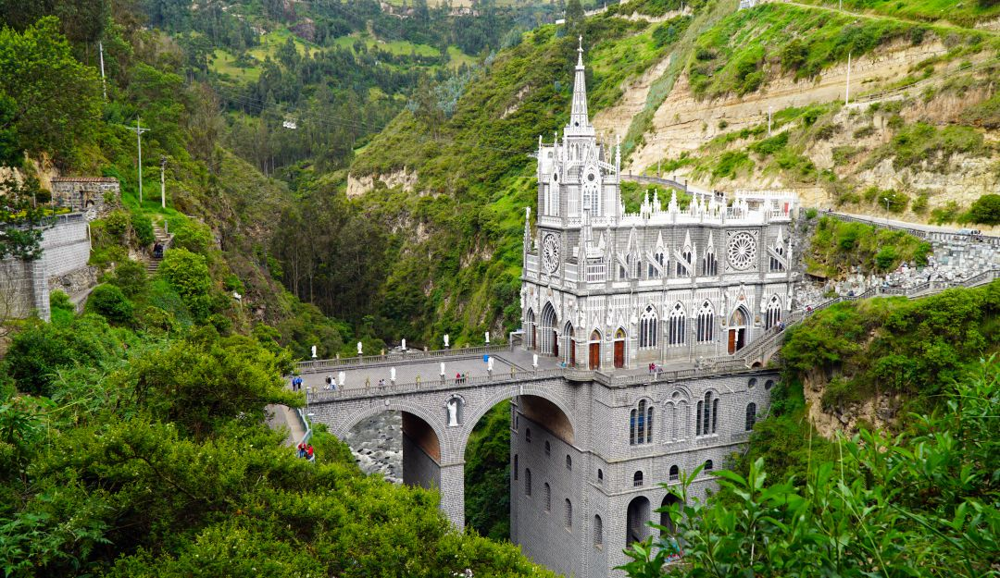

A tres horas de Bogotá, existe uno de los pocos lugares en el mundo donde sus muertos se momifican. Se trata de San Bernardo, un municipio que se volvió famoso porque al exhumar los cuerpos del cementerio, descubrieron que muchos de ellos no se descomponían, sino que se cristalizaban por las condiciones naturales. Con autorización de los familiares, crearon un museo con estas momias en 1998, que además fue declarado como Patrimonio Cultural municipal.
Hoy quedan alrededor de 10 cuerpos muy bien conservados, expuestos para que los turistas curiosos vayan a ver el proceso de momificación que se da en el lugar, que fue totalmente natural. Dicen sus habitantes que los cuerpos en San Bernardo no son sometidos a procesos químicos para momificarlos: "esto pasa porque algunos cuerpos se congelan dentro de las tumbas", explican. El clima de San Bernardo no es tan frío para que suceda, y eso resulta llamativo. Ir a ver las momias es un plan corto, pero podría ser un desvío emocionante si vas desde Bogotá a municipios como Pandi, Chinauta, Melgar o Girardot. Los paisajes y olores florales y vegetales en el camino serán un aliciente. Además, la fritanga de San Bernardo, en la plaza de mercado, es muy recomendable.
Estos pozos de agua se confunden porque pareciera que ambos quedarán en Guatavita, pero solo Tominé pertenece a este municipio, la laguna queda en Sesquilé. El primero es un lago donde se hacen actividades naúticas, recorridos a caballo y en cuatrimoto, parapente, camping y picnic. Está cerca al pueblo y es famoso porque en el fondo de él está el antiguo pueblo Guatavita, que en 1967 se inundó para la regulación de volúmenes de agua del río Bogotá y fue reubicado en su lugar actual.
A 40 minutos de Tominé está la laguna de Guatavita, uno de los destinos más místicos de Cundinamarca. Según los habitantes de la zona, anteriormente, los indígenas muiscas se bañaban en oro y se sumergían a la laguna para ofrendar sus más valiosos tesoros a los dioses. Este se llamó el rito del Dorado y es uno de los motivos que más atrae a los visitantes a Guatavita, quienes también van a fotografiar el verde de las aguas de esta laguna. Para revivir la leyenda hay una caminata con guías que inicia en una Chuzua o casa ceremonial, donde cuentan historias y creencias de los indígenas, y continúa hasta llegar a la cima de la montaña para apreciar el paisaje y la laguna. Hay que ir preparado para el frío, la temperatura está entre los 10°C y los 12°C.
Soy ingeniero de sistemas, egresado de la Universidad San José ubicada en Bogotá, Colombia.
Me encantan viajar sobre dos ruedas, salir y conocer nuevas culturas, tradiciones, religiones, personas y disfrutar de la naturaleza por toda Colombia. Tanto si salgo solo, con mi familia o con otros moteros, me gusta disfrutar al máximo de cada lugar al que llego y socializar anécdotas con otras personas.
Soy de los viajeros que prefieren ver con los ojos que a través de una cámara fotográfica o un celular y tras cada viaje me gusta escribir en mi blog para dar a conocer los diferentes lugares que he visitado y mis experiencias en ellos.